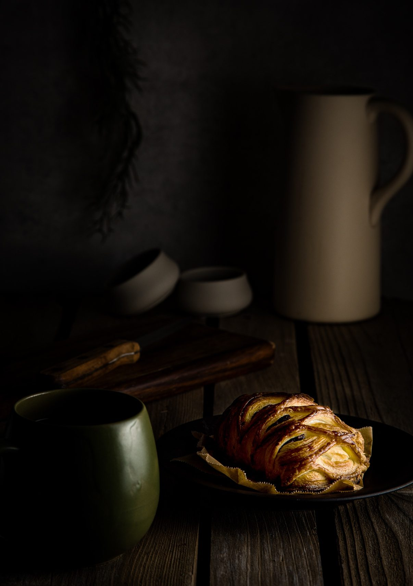
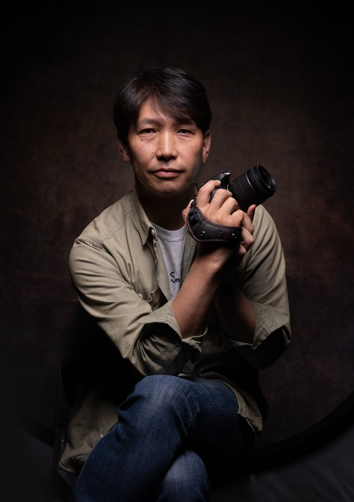

Food Photography — Nagoya
名古屋を拠点に、料理の本質を光・構図・質感で捉えるフード専門カメラマン。レストラン、食品ブランド、出版メディアへのビジュアル制作。
View Portfolioレストラン・食品ブランド・雑誌媒体向けのコマーシャル＆エディトリアル撮影。

奥村昌弘（おくむらまさひろ）。名古屋を拠点に活動するフード専門カメラマン。
レストラン、食品メーカー、料理雑誌など多岐にわたるクライアントに向け、料理の持つ情感・質感・温度感を光と構図で表現することを専門としています。MUSE Photography Awards、European Photography Awards、London Photography Awardsでのゴールド受賞をはじめ、国内外のアワードで10を超える受賞歴を持ち、食の視覚表現において高い評価を得ています。
一枚の写真が、ブランドの価値を変える。その信念を胸に、妥協のないビジュアルをお届けします。
For commissions, pricing and inquiries, please visit the official website. 撮影のご依頼・料金・お問い合わせは、公式サイトをご覧ください。
Official Website →